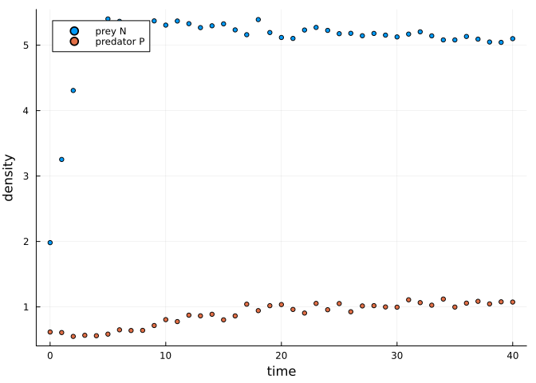
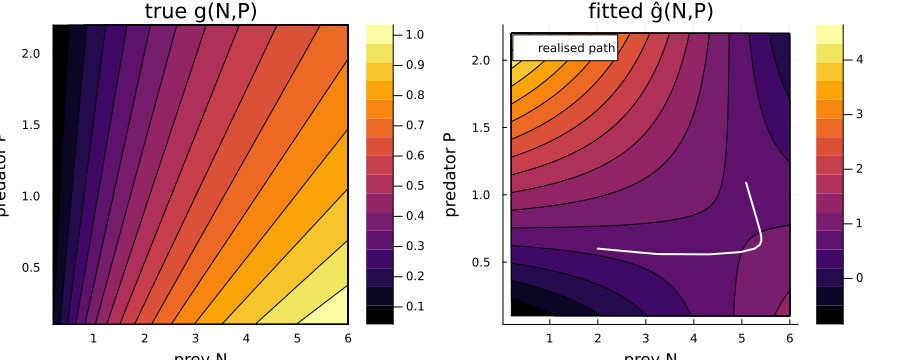
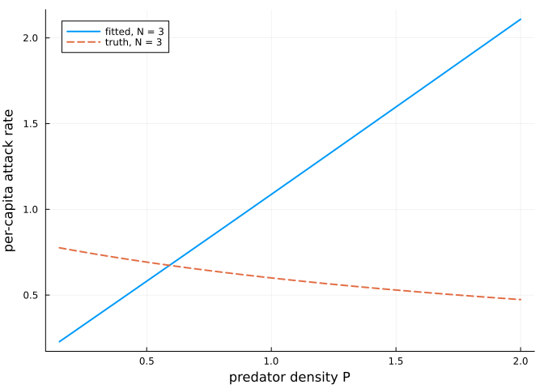

Bivariate Interaction Surfaces
Overview
Every other approximator in this package stands in for a function of one argument. TensorBSplineApproximator stands in for a function of two:
\[g(x, y) = \sum_{i=1}^{k_x} \sum_{j=1}^{k_y} \beta_{ij} \, B_i(x) \, B_j(y)\]
with a Kronecker-sum penalty — a second-difference penalty along each margin, added — so a single smoothing parameter $\lambda$ controls the roughness of the whole surface. The anisotropy keyword sets the fixed relative weight of $y$-roughness against $x$-roughness.
The ecological motivation is that many interaction rates are not functions of one density. A predator’s per-capita attack rate falls as prey become harder to handle (satiation) and as conspecifics get in the way (interference). Writing that as $g(N)$ forces the modeller to decide in advance that interference does not matter; a tensor smooth does not.
using PartiallySpecifiedModels
using OrdinaryDiffEq
using Plots; default(fmt=:png)
using Random
Random.seed!(42)TaskLocalRNG()A predator–prey system with interference
The truth couples satiation and interference in the denominator:
\[g(N, P) = \frac{0.6\,N}{1 + 0.4\,N + 0.8\,P}\]
g_true(N, P) = 0.6 * N / (1.0 + 0.4N + 0.8P)
function pp_true!(du, u, p, t)
N, P = u
graze = g_true(N, P) * P
du[1] = 1.1N * (1 - N / 6.0) - graze
du[2] = 0.45 * graze - 0.35P
end
st = solve(ODEProblem(pp_true!, [2.0, 0.6], (0.0, 40.0)), Tsit5(); saveat=1.0)
Y = hcat([u[1] for u in st.u], [u[2] for u in st.u]) .+ 0.05 .* randn(length(st.t), 2)
plot(st.t, Y, label=["prey N" "predator P"], xlabel="time", ylabel="density",
lw=2, seriestype=:scatter, ms=3)
Fitting the surface
In the dynamics the unknown is called with two arguments:
function pp!(du, u, p, t)
N, P = u
graze = p.g(N, P) * P # bivariate unknown
du[1] = 1.1N * (1 - N / 6.0) - graze
du[2] = 0.45 * graze - 0.35P
end
approx = TensorBSplineApproximator(:g, (0.0, 6.5), (0.0, 2.5), 4, 4;
initial = (N, P) -> 0.3N)
prob = PSMProblem(pp!, [2.0, 0.6], (0.0, 40.0), [approx];
data_times=collect(st.t), data_values=Y, obs_to_state=[1, 2],
known_params=NamedTuple(), likelihood=Gaussian(), solver=Tsit5())
sol = solve(prob, LAML(maxiters=40, verbose=false))
(; data_loss=sol.data_loss, edf=sol.edf,
converged=sol.convergence.converged)(data_loss = 0.20481606236233083, edf = 4.267575651318284, converged = true)4, 4 knots per margin is 16 coefficients. That is a lot to ask of 41 observations, and it is worth being deliberate: a bivariate smooth has $k_x \times k_y$ coefficients, so knot counts that feel modest per margin multiply quickly.
Judge the surface where the data actually go
This is the part that matters, and it is easy to get wrong. The state follows a trajectory — a curve through the $(N, P)$ plane, not a filled region. The surface is identified only where that curve goes. Scoring the fit on a full rectangular grid measures extrapolation into corners the system never enters, and will make any honest fit look bad.
ghat = sol.unknown_functions[:g]
visited = [(u[1], u[2]) for u in st.u]
errs = [abs(ghat(N, P) - g_true(N, P)) for (N, P) in visited]
(; max_error_on_path = maximum(errs), mean_error_on_path = sum(errs)/length(errs))(max_error_on_path = 0.0825769441679115, mean_error_on_path = 0.009700277979629059)Ns = range(0.2, 6.0, length=60)
Ps = range(0.1, 2.2, length=60)
p1 = contour(Ns, Ps, (N, P) -> g_true(N, P), fill=true, title="true g(N,P)",
xlabel="prey N", ylabel="predator P")
p2 = contour(Ns, Ps, (N, P) -> ghat(N, P), fill=true, title="fitted ĝ(N,P)",
xlabel="prey N", ylabel="predator P")
plot!(p2, [u[1] for u in st.u], [u[2] for u in st.u], lw=2, c=:white,
label="realised path")
plot(p1, p2, layout=(1,2), size=(900,360))
The white curve is the realised trajectory. Agreement is close along it and degrades away from it — which is the correct behaviour, not a defect.
Interference actually matters
A slice at fixed prey density shows the predator dependence the univariate form would have assumed away:
Pgrid = range(0.15, 2.0, length=50)
plot(Pgrid, [ghat(3.0, P) for P in Pgrid], lw=2, label="fitted, N = 3")
plot!(Pgrid, [g_true(3.0, P) for P in Pgrid], lw=2, ls=:dash, label="truth, N = 3")
xlabel!("predator density P"); ylabel!("per-capita attack rate")
When to use TensorBSplineApproximator
- The rate plausibly depends on two state variables and you do not want to commit to a functional form for either.
- You have enough data: coefficients grow as $k_x \times k_y$.
- You can accept that the surface is identified only near the realised trajectory. Check it there, and treat values far from the path as extrapolation.
If the response really is a function of one combination of the two arguments, SingleIndexApproximator is the cheaper rank-1 restriction — see the single-index vignette, which uses this same predator–prey system.
References
- Wood, S.N. (2017). Generalized Additive Models: An Introduction with R, 2nd ed. Chapman & Hall/CRC. (Tensor-product smooths and their penalties.)